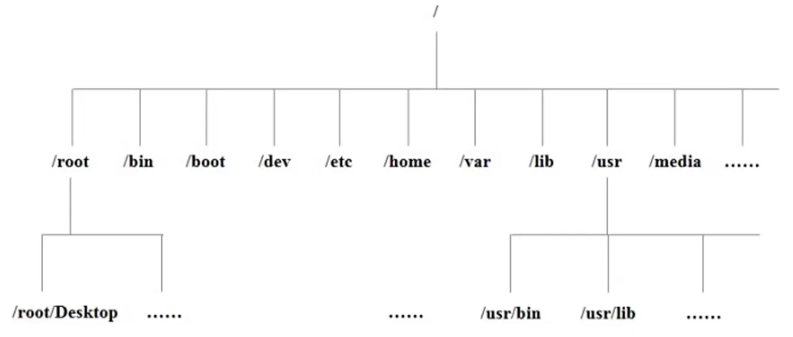
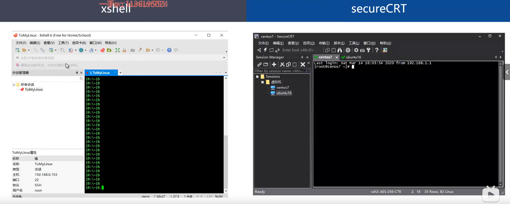

Linux必备系统命令
Linux基本常识
- Linux简介 开源、免费、多用户、多任务、多线程、多CPU 的 操作系统
- Linux目录结构

- Linux远程登录

Linux常用命令
- 文件处理命令
- ls---显示当前目录下所有文件
- ls -l列表形式展示文件
- ls -a显示所有文件（包括隐藏文件）
- ls -h按字节的形式展示文件大小
- mkdir---创建目录
- mkdir -p递归创建子目录
- cd---切换目录
- cd 目录1 计入目录1文件夹
- cd ..回退到上一级目录
- cd /root相对路径 cd /root/1绝对路径
- touch---创建文件 touch 1.txt
- vi---创建直接写入 ESC后输入：/要搜索的---查找 ：wq保存退出 ：q不保存退出
- cp---复制文件 > cp 1.txt 2.txt > > cp 1.txt 2/
- cp -r递归复制其子目录内所有内容
- mv---剪切文件
- pwd---显示当前目录
- rm---删除文件
- rm -r递归删除子目录所有内容
- rm -f强制删除 rm -rf /删库跑路
- cat---显示文件内容
- cat -n 显示行号
- tac 逆序显示文件内容
- more/less 一页一页的 80% 按回车键继续展示
- head -n显示前n行
- tail -n后n行 tail -f动态显示后n行
- 文件搜索命令 find 查找文件或目录 find -name >find -name 2.txt > >find -name "*.txt" find -amin -n 在过去n分钟内被读取过 find -anewer file 比文件file更晚被读取过 find -atime -n 在过去n天内被读取过的文件 find -cmin -n 在过去n分钟内被修改过 find -cnewer file 比文件file更新的文件 find -ctime -n 在过去n天内被修改过的文件 find -type根据文件类型查找 find -type f文件 find -type d目录 find -type l链接 > find /bin/ -type l 查找系统中所有文件长度为0的普通文件，并列出它们的完整路径： find / -type f -size 0 -exec ls -l {} \;
- 权限管理命令
chmod 更改文件权限
chmod +x 文件目录（全部）
> chmod -x 1/
chmod -R u+rwx 文件/文件夹（所有者）
> chmod -R u-r 1/
chmod -R g+rwx 文件/文件夹（文件所在组）
chmod -R o+rwx 文件/文件夹（其他用户）
- 授予用户、组、其他人对文件或文件夹可读r可写w可执行x chmod -R +777 文件/文件夹 二进制权限： rwx=111=4+2+1=7 r-x=101=4+0+1=5 rw-=110=4+2+0=6 r--=100=4+0+0=4
- 压缩解压命令
- gzip 压缩、解压缩.gz文件 gzip<文件> 压缩文件 > gzip 1.txt gunzip/gzip -d<文件> 解压文件 > gzip -d 1.txt
- zip 压缩、解压缩zip文件[可以文件夹]
zip -r<压缩后文件名><目录> 打包目录
> zip -r test.zip test/
unzip
- tar 打包和压缩目录（保留源文件） tar -zcf<压缩后文件；名><被压缩目录> 打包 > tar -zcf 2.tar.gz 2.txt tar -zxvf 压缩包文件名 解压 > tar -zxvf 2.tar.gz -f 制定文件名 -v 显示详细信息 -z 打包/解包的同时压缩/解压（放在选项的前面）
- 网络命令 ping 测试网络连通性 > ping baidu.com ifconfig 查看当前的网络配置信息 netstat 显示网络相关信息 netstat -tlun查看本机监听的端口 netstat -rn查看本机路由表 netstat -anp 列出所有端口信息，最后一列为进程ID netstat -anpt 查看tcp端口信息
- 查看进程 Ps---查看系统进程 ps aux：列出全部进程 a--查看其他用户的进程 x--查看自己的进程 u--显示进程的用户名和时间 查看关于nginx的相关进程信息 ps aux | grep nginx 查找某个进程 grep 查找 ps -u 用户 指定进程用户查找 查看指定用户的信息 ps -u root Top---实时刷新的进程信息 c：显示进程的完整命令 P：CPU降序的方式排序 M：按内存的占用大小来排序 q：退出 ctrl+c：退出
- 其他命令 uname -a：查看当前操作系统的Linux内核信息（经常根据内核版本判断是否有本地提权的风险） whoami：显示Linux上当前已登录用户 id：显示当前已登录的用户和组 last：显示之前登录系统的用户信息 lastlog：显示所有用户的最后一次登录信息 useradd 用户1：添加用户1 userdel 用户1：删除用户1[但cd /home中没被删干净 可用rm -rf彻底删除] passwd 用户1：修改用户1密码 cat /var/log加两次tab键：查看日志目录 history：查看历史操作命令 history -c：清理历史记录 cat ~/.bash_history 查看历史操作命令 crontab 计划任务 crontab -l列出系统的计划任务 crontab -e进入编辑模式 crontab -u root -e查看某个特定用户的 同理crontab -u root -l